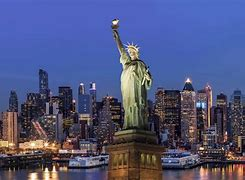
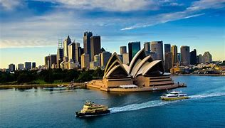
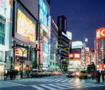

More Destinations
Back To Main| Image | City | Country | Description |
|---|---|---|---|
|
Bora Bora | French Polynesia | The main industry on this petite island in French Polynesia and its swarm of tiny motu (islands) is tourism. To that end, you can snorkel with manta rays, scuba dive along coral reefs, explore the boutiques and markets in Vaitape (Bora Bora's main port), hike Mount Pahia and watch the sunset from the deck of your overwater bungalow. |
|  | Glacier National Park | United States of America | Glacier National Park is a recreational area in Montana that was established in 19101. It covers more than one million acres and is home to glaciers, mountains, lakes, waterfalls and a remarkable range of flourishing animal and plant life. The park is a paradise for explorers and provides something for everyone. It is still home to more than a dozen glaciers, and has massive U-shaped valleys and hulking granite peaks carved by long-ago ice flows. The park's purpose is to preserve the scenic, glacially carved landscape, wildlife, natural processes, and cultural heritage for the benefit, enjoyment, and understanding of the public |
|  | Rome | Italy | As the largest city in Australia, Sydney is known for its diverse neighborhoods, each with its own unique character and charm. Whether you’re a foodie looking to indulge in delicious cuisine, a nature enthusiast eager to explore the great outdoors, or a history buff eager to delve into the city’s past, Sydney has something for everyone. |
|  | Swiss Alps | Switzerland | Neon lights and ancient temples. Tranquil gardens and pleasure-seeking nightlife. World-class dining and incredible hospitality. Visiting Tokyo – a cultural powerhouse – is an unforgettable experience. |
| |
Maui | United Staes of America | Mexico City is a vibrant and dynamic city known for its exciting food scene, rich cultural heritage, and stunning architecture. It is home to more than 21 million people and features historic city center, museums, theater, and Aztec ruins |
|
London | England | Paris, the city of lights, love, and art. It is one of the most popular tourist destinations in the world. It is famous for its romantic ambiance, rich history, stunning architecture, and delicious cuisine. |
| Malé | The Maldives | New York City is the largest and most populated city in the USA. It is made up of five boroughs: Manhattan, Brooklyn, Queens, Staten Island, and the Bronx. The city is linguistically diverse, with more than 800 languages spoken. Visitors come to enjoy Broadway shows, shopping, and see attractions like the Statue of Liberty, Empire State Building, Brooklyn Bridge, Central Park, historic neighborhoods, and world-famous museums. | |
| Turks & Caicos | The Dominican Republic | As the largest city in Australia, Sydney is known for its diverse neighborhoods, each with its own unique character and charm. Whether you’re a foodie looking to indulge in delicious cuisine, a nature enthusiast eager to explore the great outdoors, or a history buff eager to delve into the city’s past, Sydney has something for everyone. | |
| Phuket | Thailand | Neon lights and ancient temples. Tranquil gardens and pleasure-seeking nightlife. World-class dining and incredible hospitality. Visiting Tokyo – a cultural powerhouse – is an unforgettable experience. | |
| |
Arenal National Park | Costa Rica | Mexico City is a vibrant and dynamic city known for its exciting food scene, rich cultural heritage, and stunning architecture. It is home to more than 21 million people and features historic city center, museums, theater, and Aztec ruins |
|
South Island | New Zealand | Paris, the city of lights, love, and art. It is one of the most popular tourist destinations in the world. It is famous for its romantic ambiance, rich history, stunning architecture, and delicious cuisine. |
| Tahiti | French Polynesia | New York City is the largest and most populated city in the USA. It is made up of five boroughs: Manhattan, Brooklyn, Queens, Staten Island, and the Bronx. The city is linguistically diverse, with more than 800 languages spoken. Visitors come to enjoy Broadway shows, shopping, and see attractions like the Statue of Liberty, Empire State Building, Brooklyn Bridge, Central Park, historic neighborhoods, and world-famous museums. | |
| Banff | Canada | As the largest city in Australia, Sydney is known for its diverse neighborhoods, each with its own unique character and charm. Whether you’re a foodie looking to indulge in delicious cuisine, a nature enthusiast eager to explore the great outdoors, or a history buff eager to delve into the city’s past, Sydney has something for everyone. | |
| Great Barrier Reef | Australia | Neon lights and ancient temples. Tranquil gardens and pleasure-seeking nightlife. World-class dining and incredible hospitality. Visiting Tokyo – a cultural powerhouse – is an unforgettable experience. | |
| |
Amsterdam | The Netherlands | Mexico City is a vibrant and dynamic city known for its exciting food scene, rich cultural heritage, and stunning architecture. It is home to more than 21 million people and features historic city center, museums, theater, and Aztec ruins |
|
Barecelona | Spain | Paris, the city of lights, love, and art. It is one of the most popular tourist destinations in the world. It is famous for its romantic ambiance, rich history, stunning architecture, and delicious cuisine. |
| St. Lucia | The Caribbean | New York City is the largest and most populated city in the USA. It is made up of five boroughs: Manhattan, Brooklyn, Queens, Staten Island, and the Bronx. The city is linguistically diverse, with more than 800 languages spoken. Visitors come to enjoy Broadway shows, shopping, and see attractions like the Statue of Liberty, Empire State Building, Brooklyn Bridge, Central Park, historic neighborhoods, and world-famous museums. | |
| Dubai | United Arab Emirates | As the largest city in Australia, Sydney is known for its diverse neighborhoods, each with its own unique character and charm. Whether you’re a foodie looking to indulge in delicious cuisine, a nature enthusiast eager to explore the great outdoors, or a history buff eager to delve into the city’s past, Sydney has something for everyone. | |
| Santorini | Greece | Neon lights and ancient temples. Tranquil gardens and pleasure-seeking nightlife. World-class dining and incredible hospitality. Visiting Tokyo – a cultural powerhouse – is an unforgettable experience. | |
| |
Tulum | Mexico | Mexico City is a vibrant and dynamic city known for its exciting food scene, rich cultural heritage, and stunning architecture. It is home to more than 21 million people and features historic city center, museums, theater, and Aztec ruins |
|
Florence | Italy | Paris, the city of lights, love, and art. It is one of the most popular tourist destinations in the world. It is famous for its romantic ambiance, rich history, stunning architecture, and delicious cuisine. |
| Grand Canyon National Park | United States of America | New York City is the largest and most populated city in the USA. It is made up of five boroughs: Manhattan, Brooklyn, Queens, Staten Island, and the Bronx. The city is linguistically diverse, with more than 800 languages spoken. Visitors come to enjoy Broadway shows, shopping, and see attractions like the Statue of Liberty, Empire State Building, Brooklyn Bridge, Central Park, historic neighborhoods, and world-famous museums. | |
| Tasmania | Australia | As the largest city in Australia, Sydney is known for its diverse neighborhoods, each with its own unique character and charm. Whether you’re a foodie looking to indulge in delicious cuisine, a nature enthusiast eager to explore the great outdoors, or a history buff eager to delve into the city’s past, Sydney has something for everyone. | |
| Rio de Janeiro | Brazil | Neon lights and ancient temples. Tranquil gardens and pleasure-seeking nightlife. World-class dining and incredible hospitality. Visiting Tokyo – a cultural powerhouse – is an unforgettable experience. | |
| |
Prague | Czech Republic | Mexico City is a vibrant and dynamic city known for its exciting food scene, rich cultural heritage, and stunning architecture. It is home to more than 21 million people and features historic city center, museums, theater, and Aztec ruins |
| Petra | Jordan | New York City is the largest and most populated city in the USA. It is made up of five boroughs: Manhattan, Brooklyn, Queens, Staten Island, and the Bronx. The city is linguistically diverse, with more than 800 languages spoken. Visitors come to enjoy Broadway shows, shopping, and see attractions like the Statue of Liberty, Empire State Building, Brooklyn Bridge, Central Park, historic neighborhoods, and world-famous museums. | |
| Chiang Mai | Thailand | As the largest city in Australia, Sydney is known for its diverse neighborhoods, each with its own unique character and charm. Whether you’re a foodie looking to indulge in delicious cuisine, a nature enthusiast eager to explore the great outdoors, or a history buff eager to delve into the city’s past, Sydney has something for everyone. | |
| Istanbul | Turkey | Neon lights and ancient temples. Tranquil gardens and pleasure-seeking nightlife. World-class dining and incredible hospitality. Visiting Tokyo – a cultural powerhouse – is an unforgettable experience. | |
| |
Imagination Gone Wild | Doesn't Matter | Mexico City is a vibrant and dynamic city known for its exciting food scene, rich cultural heritage, and stunning architecture. It is home to more than 21 million people and features historic city center, museums, theater, and Aztec ruins |
Mon. - Fri. 9:00-5:00
Sat. 10:00-2:00
Sun. Off
© Copyright 2024 . All rights reserved.